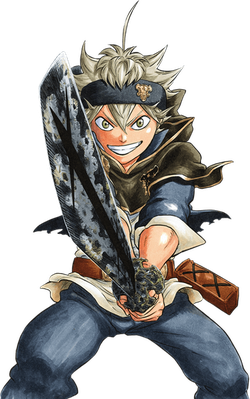

Visão geral:
Asta「アスタ Asuta」 é o principal protagonista de Black Clover e um órfão que foi criado sob os cuidados de
uma igreja na vila de Hage[6] depois que sua mãe o abandona na porta da igreja.[7][8] Após completar 15
anos, Asta recebe um grimório de trevo de cinco folhas com um demônio Anti Magia dentro.[9] Ele se junta
ao esquadrão Touros Negros dos Cavaleiros Mágicos do Reino Clover[10] e se torna um Cavaleiro Mágico
Sênior de 1ª Classe.[11] Ele foi temporariamente um membro do esquadrão Cavaleiros Reais.[12]
Ele normalmente seria um mago abaixo do Nono Estágio(estaria fora dos estágio de tão fraco), o nível
mais baixo por não possuir magia, mas graças a Anti Magia ele atualmente está classificado em um nível
elevado acima do Estágio Zero, o Estágio Arcano.[13]